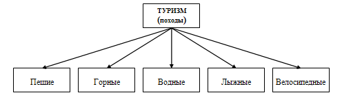
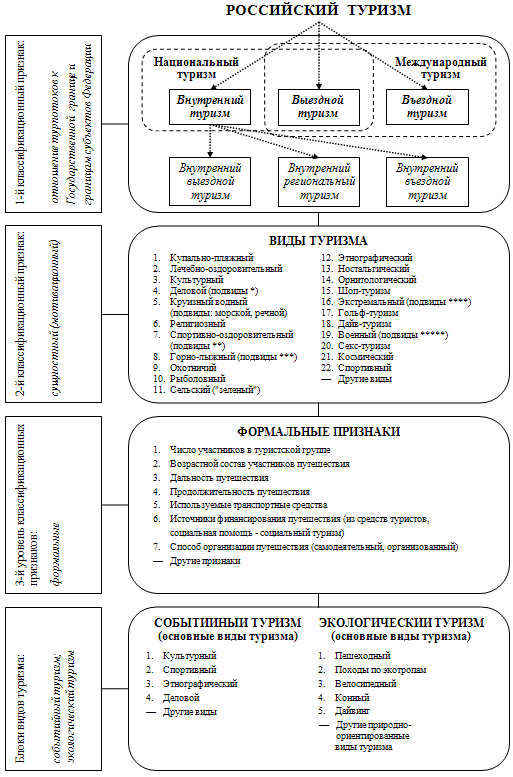

Опыт разработки классификации современного российского туризма // Труды Международной туристской академии. Выпуск 5. «Приоритеты и перспективы научных исследований международного туризма в XXI веке». М., 2010 г. - С. 59 - 69
Анализируются классификации отечественного туризма, созданные в послевоенное время и являющиеся отражением его диверсификации во времени. В разработанной автором классификации впервые используются следующие понятия: классификационные признаки различного уровня, блоки событийного и экологического туризма. Экологический туризм рассматривается как совокупность природно-ориентированных видов туризма, объединенных детерминирующими природосберегающими технологиями при проведении путешествий.
Ключевые слова: классификация, туризм внутренний, въездной, выездной, событийный, экологический, международный, социальный, природно-ориентированные виды туризма
The article analyzes domestic tourism classifications, originated in post-war period and reflecting tourism's diversification in time. In the new classification author pioneers to use the following concepts: graded characteristics of various levels, groups of event-trigger and ecological tourism. Ecological tourism is considered as an aggregate of different nature-oriented tourism sorts, combined by determinant nature-preserving methods of tour conducting.
Key words: classification, domestic, entry, depart, event-trigger, ecological, global, social tourism, nature-oriented tourism sorts.
Современный российский туризм имеет конкретную начальную дату своей хронологии - 24 апреля 1945 г., день подписания постановления Секретариата ВЦСПС «О восстановлении деятельности туристско-экскурсионного управления ВЦСПС», прекратившейся в период Великой Отечественной войны. За четыре года в стране были уничтожены в результате военных действий или пришли в полную негодность используемые для работы госпиталей туристские базы, с фронтов не вернулось большое число профессиональных работников туристской сферы. Чтобы возродить туризм необходимо было заново создать его материально-техническую базу, подготовить кадры, организовать туристские клубы и секции, издать методическую литературу и сделать многое другое.
Все шесть последующих десятилетий шла непрекращающаяся работа по развитию туризма в стране, важнейшего компонента ее социальной среды. В итоге, к началу XXI в. туризм превратился в мощную хозяйственную отрасль России, обслуживающую миллионы отечественных и зарубежных туристов.
Изменения, происходившие с туризмом во времени, зафиксированы в его классификациях, подвергавшихся модернизации с каждым новым витком развития туристской деятельности. Чтобы понять их, познакомимся прежде всего со структурой отечественного туризма конца 40-х гг., для чего обратимся к статье «Туризм» в 55 томе Большой советской энциклопедии, изданном в 1947 г. Она представляла собой первую публикацию энциклопедического характера, посвященную отечественному туризму. Приведем небольшое извлечение из нее:
«Туризм - один из способов организации и проведения досуга в путешествиях. Разрешая ряд задач коммунистического воспитания трудящихся и используя как средство различные виды передвижения (пешком, на лыжах, водой и др.) советский туризм втягивает массы трудящихся в овладение физической культурой... В пешеходных, лыжных, горных и водных походах советские туристы получают физическую тренировку и закаляют организм...» [1].
Знакомство с энциклопедической статьей дает достаточно оснований констатировать, что туризм в конце 40-х гг. идентифицировался у граждан Советского Союза лишь с туристскими походами. Многое из того, что сегодня относится к туристской деятельности, в то время никто не связывал с понятием «туризм». Например, такие его современные виды, как поездки с лечебными целями на курорт, туризм с религиозным содержанием, деловой туризм, купально-пляжный, отсутствовал международный туристский обмен и др.
Классификация туризма в СССР конца 40-х гг. была проста и включала в себя лишь виды туризма с активными способами передвижения:
Основной контингент участников походов образовывала молодежь. Важное значение придавалось детскому туризму, что было связано с задачами патриотического воспитания подрастающего поколения. В 1945 г. Центральная детская экскурсионно-туристская станция Министерства просвещения РСФСР подготовила положение о массовом туристском походе, получившем название «Поход пионеров и школьников по изучению родного края». Походы проводились преимущественно вблизи местожительства юных туристов. Дальние путешествия школьников по территории страны возобновились в 1946 г. Учащиеся школы № 313 г. Москвы совершили поездку на Урал, школы № 489 - на Белое море. Школьники разных областей и краев побывали в этот год в Крыму [2].
Сразу же после окончания войны началась работа по возрождению туристских баз. И уже в 1946 г. отдыхающих приняла база «Селигер» в Калининской области, основу программ которой составляли непродолжительные походы на гребных лодках по озеру. В 1947 г. заработала турбаза «Кавказ» в поселке Гузерипль Краснодарского края. Ее инструкторы проводили пешие доступные для всех прогулки в горы. В 1948 г. открылись турбазы «Привал» в Бахчисарае в Крыму и «Репино» в поселке Репино Ленинградской области. Через пять лет после войны в стране работало 67 туристских баз. На них отдохнуло около 40 тыс. чел. Таким образом, произошло возрождение ставшего популярным еще в довоенные годы планового туризма [3].
К середине 50-х гг. в стране были созданы сотни плановых туристских маршрутов, несколько речных круизов. В начале 60-х гг. впервые осуществлены железнодорожные путешествия. В 1969 г. Центральный совет по туризму и экскурсиям ВЦСПС организовал около тысячи железнодорожных рейсов, более четырех тысяч авиационных, свыше шести тысяч автобусных путешествий, арендовал 89 судов для проведения круизных путешествий на крупных реках страны.
В 1975 г. совершено уже около 10 тысяч железнодорожных рейсов, почти 4 тысячи авиарейсов, свыше 200 тысяч автобусных путешествий. Еще через пять лет, в 1980 г., общее количество железнодорожных, теплоходных, авиационных и автобусных туристских рейсов достигло 330 тыс., было обслужено 30 млн плановых туристов. Миллионы граждан по всей стране отправлялись в самодеятельные туристские походы, организуемые клубами и секциями туристов [4].
С середины 50-х гг. начал развиваться выездной туризм. В 1960 г. в путешествия за границу отправилось около 730 тыс. чел., в 1965 г. - почти 1,2 млн, в 1970 г. - более 1,8 млн, в 1975 г. - около 2,5 млн, в 1980 г. почти 4 млн. Международный туризм стал важным сегментом туристской деятельности в стране [3].
За первых четыре десятилетия, прошедших с окончания Великой Отечественной войны, туризм в СССР, практически, превратился в отрасль хозяйства. Он перестал восприниматься только в виде походов, что нашло отражения и в его классификациях, созданных различными авторами. В качестве иллюстрации ниже приводится одна из этих классификаций.
Классификация туризма в СССР
(конец 70-х - начало 80-х гг.) [5]
I. По значению (классы)
1.1. Внутренний (национальный)
1.1.1. Местный
1.1.2. Дальний
1.2. Иностранный
1.2.1. Внутрирегиональный
1.2.2. Межрегиональный
1.2.3. Кругосветный
II. В зависимости от цели туристского путешествия
2.1. Курортно-лечебный
2.2. Культурно-развлекательный
2.3. Познавательно-деловой
2.4. Религиозный
2.5. Спортивный (пешеходный, горный, водный, лыжный, горно-лыжный, велосипедный, автомобильный)
III. По характеру организации
3.1. Плановый (организованный)
3.2. Самодеятельный (неорганизованный)
IV. По возрасту участников
4.1. Детский
4.2. Молодежный
4.3. Туризм взрослых
V. По срокам и продолжительности пребывания в путешествии
5.1. Кратковременный
5.2. Продолжительный
VI. По интенсивности туристских потоков
6.1. Постоянный
6.2. Сезонный (летний, зимний, межсезонный)
VII. В зависимости от способов передвижения и транспортных средств (пешеходный, горный, лыжный, водный, подводный, велосипедный, спелеологический, автомобильный, автобусный, мотоциклетный, авиационный, морской, речной, железнодорожный, комбинированный)
Приведенная классификация, идентичная по глубине анализа туризма классификациям, предложенным другими авторами, фиксирует то, что в российском туризме появились плановый туризм, международный туризм, называвшийся в то время чаще «иностранным». Свое место заняли такие виды как курортно-лечебный, культурно-развлекательный, автобусный, авиационный, морской, железнодорожный, спелеологический. Туристская индустрия страны могла теперь удовлетворить значительно большее число разнообразных запросов своих граждан.
Но в представленной классификации не отражена одна из важнейших черт туризма Советского Союза - его социальный характер. Плановые туристские маршруты были доступны самым широким слоям населения страны, чему способствовали различные льготы. Так, в 1985 г. около 85% граждан, которые отдохнули в здравницах профсоюзов, получили путевки за счет средств социального страхования и государственного бюджета бесплатно или по льготным ценам с оплатой только 30% или же 50% их стоимости [6].
В последующие два десятилетия продолжался процесс развития и одновременно диверсификации туризма. Основным отличием нынешнего организованного российского туризма от туризма советских времен является его коммерческий характер, так как главными организаторами туристской деятельности стали самостоятельные хозяйствующие субъекты - туристские фирмы (акционерные общества, общества с ограниченной ответственностью, индивидуальные частные предприниматели).
Из видов туризма первое место по числу охваченных граждан занимает сегодня купально-пляжный туризм. Появились в российском туризме понятия «экологический туризм», «событийный туризм», «экстремальный туризм» и др.
Динамичный процесс развития туризма, его постоянные качественные изменения, наращивание числа видов, связанное чаще всего с проникновением в туризм новых технологий, являются основанием для совершенствования туристских классификаций, цель создания которых адекватно отразить современное состояние туристской сферы страны. Одна из подобных классификаций, разработанная автором данной статьи на основе анализа российского туризма, приводится ниже.
{kind=link}
* подвиды делового туризма: классические деловые поездки, МИСЕ
** подвиды спортивно-оздоровительного туризма: пешеходный, горный,
водный на гребных судах, водный парусный, лыжный, велосипедный, спелеотуризм, конный, авто-мототуризм
*** подвиды горнолыжного туризма: горные лыжи, сноубординг
**** подвиды экстремального туризма: каньонинг, горный велосипед, каякинг и др.
***** подвиды военного туризма: полеты на самолетах, боевые стрельбы, танковые туры и др.
В представленной классификации российского туризма выделяются типы, подтипы, виды, подвиды и блоки, объединяющие ряд видов туризма по определенным принципам.
Типами являются внутренний, выездной и въездной туризм, дефиниции которых находим в Федеральном законе «Об основах туристской деятельности в Российской Федерации».
Внутренний туризм подразделен на три подтипа:
-
внутренний (внутрироссийский) региональный туризм - путешествия жителей области, края, республики в пределах своего региона;
-
внутренний (внутрироссийский) выездной туризм - путешествия жителей одного субъекта Федерации (поставщика туристов) по территории другого субъекта Федерации;
-
внутренний (внутрироссийский) въездной туризм - въезд туристов на территорию субъекта Федерации из других регионов России.
Впервые это деление внутреннего туризма на составляющие его подтипы было использовано автором настоящей публикации при анализе внутреннего туризма в Ростовской области в 2000 г. Удалось установить, что в структуре внутреннего туризма области более 90% всего числа туристов образуют внутренний выездной поток, направленный преимущественно на Черноморское побережье Краснодарского края и в горы Северо-Западного Кавказа. Особо слабо в области представлен региональный туризм, образуемый преимущественно лечебно-оздоровительным туризмом, реализуемым в местных санаториях [7].
Предложенное деление внутреннего туризма на подтипы дает возможность получить достоверную картину туристских миграций в любом регионе страны и определить место внутреннего туризма в их экономике.
В процессе разработки классификации современного российского туризма было выделено три классификационных признака, с помощью которых упорядочиваются представления о структуре туризма:
1-й классификационный признак - отношение турпотоков к Государственной границе и границам субъектов Федерации;
2-й классификационный признак - сущностный, отражающий цель (мотив, содержание) туристского путешествия. Согласно ему, туристские путешествия подразделяются на виды и подвиды. Можно выделить столько видов туризма, сколько целей имеют различные туристские путешествия. Например, М.Б. Биржаков выделяет такой вид как озерный туризм (путешествия на лодках по озерам) и полярный (к примеру, путешествие по Шпицбергену) [8]. По мере развития туризма число его видов и подвидов имеет тенденцию к росту.
3-я группа классификационных признаков - формальные. Они все касаются каждого конкретного туристского путешествия, но не влияют на его цели (мотивы). Формальные признаки должны учитываться при его подготовке, выработке плана путешествия и проведении.
Формальные признаки входили в число основных классификационных признаков во все предыдущие классификации туризма. В предлагаемой классификации в качестве основных признаков рассматриваются отношение турпотоков к границам (1-й классификационный признак) и сущностные
(2-й классификационный признак).
Впервые в туристскую классификацию введено понятие блоки видов туризма, под чем понимается определенная (свободная, не структуированная) группа видов туризма, объединяемая какой-либо формой деятельности. Выделены следующие блоки:
блок событийного туризма;
блок экологического туризма.
Под событийным туризмом понимается туристская деятельность, связанная с разнообразными значимыми общественными событиями, а также редкими природными явлениями, привлекающими своей уникальностью, экзотичностью, неповторимостью большие массы соотечественников и туристов из зарубежных стран. Блок событийного туризма включает в себя ряд мероприятий культурного, спортивного, этнографического, выставочного (делового) видов туризма. Но далеко не все из проводимых мероприятий следует относить к нему, лишь те, которые приносят какой-либо доход и, следовательно, могут считаться ресурсной составляющей места (страны) их проведения.
В Западной Европе, например, к наиболее значимым культурным событиям, без сомнения, относятся кинофестивали в Каннах и Венеции, Зальцбургский музыкальный фестиваль, Венские оперные балы и др.
Тысячи туристов притягивают карнавалы и народные праздники, имеющие как длительную, так и совсем молодую историю, проводимые в Венеции и Кельне, бега быков в Памплоне, помидорная битва «Томатина» в Буньоле, пивной фестиваль «Октоберфест» в Мюнхене.
Крупнейшие выставочные мероприятия, такие как аэрокосмический салон в Ле Бурже, Женевский автосалон, выставка цветов в Челси стали важными мероприятиями событийного туризма, привлекающими не только профессионалов, для которых они в первую очередь и устраиваются, но и туристов из многих стран.
Большое место в событийном туризме занимают спортивные мероприятия. Особенно те из них, которые представляют собой грандиозные по масштабам зрелища, такие как Олимпийские игры, чемпионаты мира и Европы по футболу, автогонки «Формулы 1».
В России событийный туризм, приносящий прибыль, широкого развития еще не получил. В стране пока не сформировалось сколько-нибудь периодически повторяющихся общественно значимых мероприятий, привлекающих большие массы российских и зарубежных туристов. К событийному туризму можно отнести Авиакосмический салон МАКС, Широкую Масленицу в Москве, будущие олимпийские игры в Сочи.
Мероприятия событийного туризма имеют большое экономическое значение. В период их проведения активизируется деятельность всех объектов туристской индустрии. Потребительский спрос значительно превышает предложения. Наблюдается возрождение местных культурных традиций, обычаев, развитие народного творчества.
Блок экологического туризма представляет собой совокупность природно-ориентированных видов туризма, участники которых, совершая путешествия в природные зоны, должны содействовать сохранению окружающей среды, одновременно с этим стремиться к поддержанию благосостояния местных жителей. Такой смысл имеет несколько перефразированное определение экологического туризма, данное ему Международной организацией экотуризма (TIES).
Экологический туризм постоянно в научных публикациях и учебно-методических пособиях называют видом туризма, с чем нельзя согласиться. Это форма проведения туристских путешествий. В перечень видов туризма, объединенных термином «экологический» и по определению Всемирной туристской организации включающим в себя «все виды природного туризма, при которых основной мотивацией туристов является наблюдение и приобщение к природе», можно отнести пешие походы, наблюдения за «дикой природой», походы по экологическим тропам, велосипедные туры, скалолазание, каньонинг, каякинг, жизнь в сельской местности во время отпуска, путешествия на гребных лодках, океанические туры и др. [9]. Главное, чтобы они соответствовали следующим основным принципам экологического туризма:
были обращены к природе (как девственной, так и окультуренной) и основаны наиспользовании преимущественно природных ресурсов;
не наносили ущерб среде нашего обитания или до предела минимизировали его;
были нацелены на экологическое образование и просвещение;
проявляли заботу о сохранении местной социокультурной среды;
являлись экономически эффективными и обеспечивали устойчивое развитие районов, в которых организуются эти туры.
Понятие «экологический туризм», по нашему мнению, прежде всего обозначает этическую сторону поведения туристов на природе во время путешествия, которое должно быть адекватным строгим природосберегающим технологиям.
Предлагаемая классификация современного российского туризма представляет собой один из возможных вариантов, отражающих нынешнее его состояние. Для туризма, характеризующегося структурной сложностью и большой динамичностью развития, вероятно, не представляется возможным когда-либо получить законченную (стагнированную) классификацию. Она обречена находиться в процессе постоянной модернизации вслед за изменениями, происходящими в мировом туризме.
Литература
Большая советская энциклопедия. Т. 55. М., 1947.
Детский туризм в России. Очерки истории: 1918-1998 гг. Автор-составитель Ю.С. Константинов. М., 1998.
Долженко Г.П. История туризма в дореволюционной России и СССР. Ростов-на-Дону, 1988.
Абуков А.Х. Туризм сегодня и завтра. Туристско-экскурсионная работа профсоюзов. М., 1978.
Крачило Н.П. Основы туризмоведения. Киев, 1980.
Народное хозяйство СССР в 1985 г. Статистический ежегодник. М., 1986.
Долженко Г.П., Сухов Р.И. Туризм в регионе (на примере Ростовской области) // Известия вузов. Северо-Кавказский регион. Общественные науки. 2001. № 3
Биржаков М.Б. Введение в туризм. Учебник. СПб., 2006.
Дроздов А.В. Современный экотуризм. Концепции и практика //Теория и практика международного туризма. М., 2003.